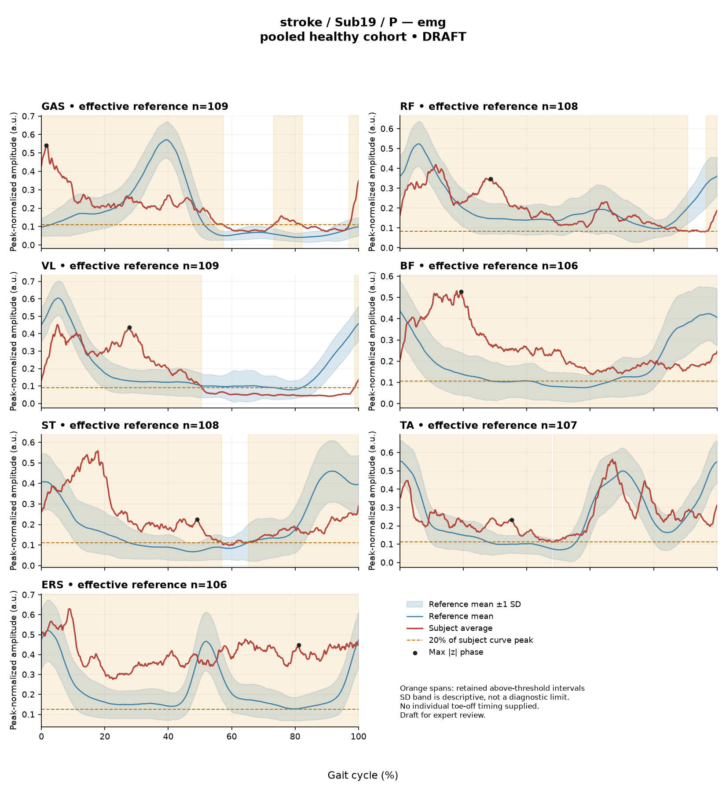

R94E05D85A21BD0DF
rater2 / 34 of 150 / Case stroke_Sub19_P / Review row 35
Report: verbatim text
Text file for exact quotations# Gait Report Interpretation — Sub19_P **Interpretation version:** limited-evidence-v3.1-candidate **Scope:** Research-level interpretation of a supplied quantitative summary. Not a diagnosis, not a treatment recommendation. --- ## 1. Objective Findings **Participant and side.** Sub19_P is recorded in the **stroke** group, and the analyzed limb is the **paretic** side. All findings below describe that limb only. The released cycle runs from initial contact of the paretic limb at 0% to the next initial contact of the same limb at 100%; these endpoints are successive occurrences of the same event, not a single instant. **No intermediate gait event (including toe-off) is supplied**, so all timing in this report is expressed as a percentage of the analysis cycle and no percentage can be assigned to stance, swing, loading response, mid-stance or pre-swing. **Spatiotemporal values as supplied.** - Gait speed **0.26 m/s**, which falls in the "household ambulator (<0.4 m/s)" band. This label denotes a speed band only; it is not a measurement of walking independence, safety, or real-world community mobility. - Cadence **63.6 steps/min**. - Step length symmetry index **+12.6%**, using the **successive-footfall** definition (each heel's position at its own initial contact). By the stated sign convention, a negative value means a shorter paretic step; this value is positive, i.e. the paretic step is the **longer** of the two under this definition. The alternative instantaneous definition can yield a different value in some subjects, so this figure is specific to the stated definition and should not be treated as definition-independent. **Reference used and its limits.** Kinematic deviation is referenced to **138 pooled healthy subjects, 1001 phase points (main_cohort_excel)**. That cohort pools both body sides and all ages and is **not age- or speed-matched** to this participant. Critically, the healthy reference self-selected speeds span **0.80–1.79 m/s**, and this participant walks at **0.26 m/s** — well below that floor. **No speed-matched healthy reference exists in this dataset for this subject.** Every deviation reported below therefore conflates very-slow-walking effects with stroke-related control changes, and these two contributions cannot be separated from these data. Deviations should be read as differences from an unmatched empirical reference, not as measurements of a disease effect, and not as a clinical diagnosis or severity grade. **Channels available and not available.** - Sagittal-plane kinematics for ankle, knee, hip and pelvis are supplied. **Coronal and transverse plane data are not included** in this release pipeline. - Seven EMG envelope channels are supplied (GAS, RF, VL, BF, ST, TA, ERS), each with detected intervals, coverage, peak relative amplitude and a max |z| statistic. - **Not supplied in this input:** individual toe-off and other intra-cycle events; muscle-specific matched normal timing references; stride-level (stride-to-stride) variability; raw-signal quality checks; expert plots; age, sex, time post-stroke, stroke clinical scores, and non-paretic-side data. These are "not supplied to this task" — they must not be described as absent from the source dataset, and their absence is different from a documented absent recording. --- ## 2. EMG Envelope and Threshold Findings **How these numbers are defined.** The curves are **ensemble-averaged envelopes**. Normalization uses a denominator shared across the available strides and, in this stroke release, is **participant-, side- and muscle-specific** — it is not shared between sides. Amplitudes are therefore **relative envelope values only**: they are not neural drive, force or strength, they cannot be used to rank muscles as stronger or weaker, they cannot be compared across sides, and an averaged curve cannot establish stride-to-stride variability. Detected intervals are regions where the **averaged** envelope exceeds **20% of that same curve's own peak** for at least 3% of the cycle. These are properties of the averaged envelope under that rule — not physiological onset, offset, contraction duration, or inactivity outside the intervals — and the mean-envelope pattern should not be assumed to recur in every individual stride. An interval written X%–Y% with X > Y wraps the 100%→0% boundary; an onset of 0% is the analysis-window edge, not a physiological onset. **Detected intervals and coverage (mean-envelope level).** | Muscle | Detected interval(s) | Coverage | Boundary continuity | Peak rel. amp. | Max \|z\| (location) | |---|---|---|---|---|---| | GAS | 73%–82%; 97%–57% (wraps) | 70% | above threshold across boundary | 0.55 | 8.1 above ref. at 2% | | RF | 97%–91% (wraps) | 97% | above threshold across boundary | 0.42 | 2.6 above ref. at 29% | | VL | 99%–50% (wraps) | 52% | above threshold across boundary | 0.45 | 4.5 above ref. at 28% | | BF | 0%–100% | 100% | above threshold across boundary | 0.53 | 3.9 above ref. at 19% | | ST | 65%–57% (wraps) | 95% | above threshold across boundary | 0.56 | 3.5 above ref. at 49% | | TA | 48%–48% (wraps) | 99% | above threshold across boundary | 0.56 | 2.7 above ref. at 35% | | ERS | 0%–100% | 100% | above threshold across boundary | 0.63 | 5.3 above ref. at 81% | All seven averaged envelopes remain above their own 20%-of-peak threshold **across the cycle-defining initial-contact boundary**, and reported coverage is high in six of seven channels (52% for VL, 70% for GAS, 95–100% for the remainder). GAS is the only channel with a second, separately retained interval (73%–82%) in addition to the wrapping interval. For BF and ERS the reported coverage is 100% of the cycle, i.e. the supplied evidence states the averaged envelope does not fall below its own relative threshold anywhere in the cycle. For the other channels, coverage below 100% indicates the averaged envelope was below threshold somewhere, but the detected-interval list alone does not localize or characterize those segments beyond what is tabulated. Because the threshold is proportional to each curve's own peak, high coverage describes a relatively flat, sustained averaged envelope shape — **not** a continuous physiological contraction and not a statement about muscle tone. Anatomically these channels correspond to plantarflexors (GAS), dorsiflexors (TA), knee extensors (RF, VL), hamstrings (BF, ST) and erector spinae (ERS). No interval here can be mapped to a functional gait role such as clearance, push-off or weight acceptance, and no timing can be called normal, early, delayed or prolonged, because individual toe-off and matched muscle-specific timing references are not supplied. **Max |z| interpretation.** Max |z| is an **extreme-value statistic** — the largest standardized difference across all 1001 phase points against the reference mean/SD at each phase — not a single-observation z-score, and **not** the location of peak envelope amplitude or of any gait event. The conventional 2-SD rule does not apply: in this dataset every one of 109 healthy controls exceeds |z| = 2 on at least one muscle, and per-muscle healthy 95th percentiles for this statistic run from **3.65 (ERS)** to **4.61 (TA)**, higher still under leave-one-out. On that basis: - **GAS 8.1** (above the phase-specific reference mean at 2% of cycle) exceeds every value in the stated 3.65–4.61 per-muscle 95th-percentile span and is the largest standardized difference in this subject. - **ERS 5.3** exceeds the supplied ERS 95th percentile of 3.65. - **TA 2.7** is below the supplied TA 95th percentile of 4.61. - For **RF 2.6, VL 4.5, BF 3.9, ST 3.5**, the muscle-specific 95th percentile is not supplied here, only the 3.65–4.61 range endpoints; these values cannot be classified without the muscle-specific limit. "Above reference" in each row means above the **phase-specific reference mean** at that location — not above a healthy percentile limit. These comparisons use the same unmatched, non-speed-matched reference described in Section 1, so exceeding a percentile does not establish abnormal physiology, pathological activity or a diagnosis. **Co-contraction indices.** CCI here is the **Falconer–Winter whole-cycle overlap index** of normalized envelopes (2 × common area / summed areas). It is a whole-cycle index, not simultaneous activation time, not muscle force, and not a phase-specific result; it can be non-zero even when detected bursts do not overlap, because sub-threshold envelope area contributes. It depends on the normalization and envelope method used here, so values and thresholds from other studies or algorithms do not transfer. - **TA vs GAS = 0.72**, above the upper endpoint (0.59) of the supplied healthy 2.5th–97.5th percentile interval (0.24–0.59) and above the supplied median of 0.39. - **RF vs BF = 0.83**, at the upper endpoint of the supplied healthy interval (0.48–0.83) and above the supplied median of 0.68. This is a displayed, rounded value sitting exactly on the endpoint; the hidden unrounded value cannot be classified as inside or outside on that basis. Being outside (or at the edge of) these empirical intervals does **not** establish pathological co-activation, spasticity, stiffness, impaired motor control or any diagnosis; being inside would not establish normal co-activation or normal muscle function. As with all comparisons here, the interval comes from an unmatched cohort with no speed overlap with this participant. --- ## 3. Kinematic and Reference Comparisons All kinematics are **sagittal plane only**; no coronal or transverse channels are included, so no statement can be made about frontal- or rotational-plane motion. | Channel | Sagittal ROM | Gait Variable Score | |---|---|---| | Ankle | 20.7° | 10.99 | | Knee | 15.6° | 18.73 | | Hip | 18.7° | 18.58 | | Pelvis | 8.2° | 5.44 | **Composite (GPS-like) score = 14.54**, the RMS of these four sagittal GVS values. This is *not* the validated 9-variable GPS. Against the supplied composite reference (median 5.1, 95th percentile 10.7), 14.54 is above both. Those are **pooled calibration percentiles** from a non-matched cohort and are not leave-one-out matched normal limits, so this comparison quantifies a summary difference from an unmatched reference — it does not grade severity, establish statistical significance, or demonstrate a stroke-specific effect separable from walking at 0.26 m/s. **Within this subject**, the largest GVS values are at the knee (18.73) and hip (18.58), with ankle intermediate (10.99) and pelvis lowest (5.44). GVS and the GPS-like composite are **summary magnitude differences across the cycle**: they do **not** localize the deviation to a phase of the cycle, and they do not indicate the direction of the waveform difference (e.g. more flexed vs more extended). Nothing in this summary identifies where in the cycle the knee or hip curves differ. ROM values are reported as measured. **ROM alone does not establish a clinical restriction** — that would require an appropriate matched comparison, which is not available here — and the ROM figures are not directly comparable to the GVS figures, which are computed differently. The same comparability limits stated in Section 1 apply throughout: an unmatched, all-age, both-sides pooled reference with no speed overlap. These limits are applied identically to stroke participants and to controls; healthy-group membership would not prove normal physiology, and deviation from this empirical reference does not by itself establish disease in either direction. --- ## 4. Questions for Further Clinical Assessment These are open questions raised by the supplied summary. None presupposes that the mechanism or measurement issue in question has been observed, and none implies a treatment. 1. **Timing reference.** Can the release's per-stride gait events (including paretic toe-off) and a matched, muscle-specific normal timing band be retrieved for this participant? Without them, no interval in Section 2 can be assigned to a gait phase or characterized as early, delayed or prolonged. 2. **Speed-matched comparison.** Is an alternative reference available — slow-walking healthy controls, a speed-constrained protocol, or a leave-one-out matched run — that would allow deviations at 0.26 m/s to be evaluated without conflating slow-walking effects with stroke-related changes? 3. **Per-muscle extreme-value limits.** Can the muscle-specific healthy 95th percentiles (and leave-one-out values) for max |z| be obtained for RF, VL, BF, ST and GAS, so that values such as VL 4.5, BF 3.9, ST 3.5 and GAS 8.1 can be placed against the correct per-muscle limit rather than the 3.65–4.61 range endpoints? 4. **Signal provenance for high-coverage channels.** Has raw-signal quality been reviewed for the channels with 95–100% coverage (RF, ST, TA, BF, ERS)? Sustained above-threshold averaged envelopes can arise from genuinely sustained mean activity, from ensemble averaging, or from baseline/noise characteristics; these data do not distinguish among them. Whether crosstalk, baseline offset or electrode factors are present is an open question, not an established finding. 5. **Stride-level behaviour.** Are the individual stride envelopes (pre-averaging) accessible? The mean curve cannot show whether the observed pattern is consistent across strides or driven by a subset. 6. **Step-length definition.** Would the instantaneous step-length definition yield a different symmetry value for this subject? The +12.6% value is tied to the successive-footfall definition. 7. **Contralateral and non-sagittal data.** Are non-paretic-side EMG/kinematics and coronal/transverse channels available for this participant? Note that, given the side-specific EMG denominator, non-paretic amplitudes could not be numerically compared to these paretic values even if released. 8. **Participant context.** Can age, sex, time post-stroke, orthotic/assistive-device use during capture, and available clinical scores be linked to this record to inform how the measured speed and deviation summaries should be contextualized? *All statements above are limited to the supplied mean-curve metrics, algorithm-detected intervals and summary scores. They do not establish a diagnosis, a disease effect, a severity grade, statistical significance, or any clinical recommendation.*
Coverage rows
| Excel row | ID | Required content | Components |
|---|---|---|---|
| 192 | R049 | Describe walking speed 0.26 m/s and that it is below the stated 0.80 m/s reference floor; no reference at this speed is supplied. | AND: displayed speed and that it lies below the 0.80 m/s reference floor, so no speed-supported healthy reference exists in this dataset. Optional: cadence, speed-band label (not a functional claim). One sentence may also serve the comparability half of G03. |
| 193 | R050 | Identify knee AND hip as the principal sagittal GVS differences, without requiring an exact ordering. Exact GVS values are optional; identify the findings as reference-relative sagittal summary differences. | AND: knee AND hip, no order. Stating which joint is larger is optional; asserting the reverse order is an error. Exact GVS values are optional; no waveform direction, phase or restriction is required. Knee/hip ROM optional as measurements only. |
| 194 | R051 | Describe GAS envelope above its phase-specific reference mean at approximately 2% of the analysis cycle (displayed max |z| 8.1). Within each route, muscle identity AND mean-relative direction AND approximate cycle location are required. Exact max-|z| repetition is optional. | Required for each route: muscle identity AND direction relative to the phase-specific reference mean AND approximate cycle location. Optional: exact max |z| value, comparison with the supplied endpoint span (descriptive only). Prohibited: percentile classification, gait phase, physiological onset, severity. The location (about 2%) is adjacent to the supplied initial-contact boundary; naming that boundary is allowed, assigning a phase is not. |
| 195 | R052 | Describe the ERS envelope above its phase-specific reference mean at approximately 81% of the analysis cycle. | AND: ERS identity, above-mean direction and approximate location. Exact max |z| and any permitted displayed-endpoint comparison are optional. No compulsory percentile or clinical classification. |
| 196 | R054 | Describe the supplied successive-footfall step-length index 12.6% and its meaning: the paretic step is longer. | AND: displayed index and the direction supported by its sign. Optional: formula, definition wording. Acceptable phrasing for small displayed values: "a small difference with the paretic step slightly shorter/longer" (not a cutoff). Prohibited: restating the index as a percentage shortening (E01), severity grades, whole-gait symmetry generalization (E07 issue, not an omission). |
| 197 | G03 | Express a meaningful limitation of reference comparability AND why the comparison cannot establish disease effects or clinical diagnosis; for controls it cannot establish disease or overall normality. One statement may also support a case requirement. | AND: comparability and inference limitations |
Exact system input
Saved fileDraft a research gait-report interpretation for a physical therapist or physiatrist using only the supplied quantitative summary. This is a limited-evidence interpretation task, not diagnosis or treatment selection. Rules: - Describe the participant's actual group and side, available findings, and missing channels accurately. Healthy-group membership does not prove normal physiology; deviations from an empirical reference do not by themselves establish disease. - Treat detected EMG intervals and coverage as properties of an averaged envelope under the stated threshold and duration rule. Do not convert them into physiological onset, offset, duration, continuous contraction, or inactivity outside the intervals. You may describe reported coverage, retained intervals and boundary continuity at the mean-envelope level. Do not infer the same pattern in every individual stride. Say no below-threshold segment only when the supplied evidence establishes that; a rounded coverage value or no retained interval alone does not establish it. - Individual toe-off and matched muscle-specific timing references are not supplied in this task. Use percentages of the analysis cycle. When the input explicitly identifies an initial-contact boundary, you may name that boundary or describe numerical proximity to it. Do not assign stance/swing, loading response, pre-swing, mid-stance or another event to a percentage, or substitute a conventional 60% split. Anatomical muscle actions may be named, but do not map an interval to a gait-phase function such as clearance, push-off or weight acceptance. Do not characterize timing as normal, early, delayed or prolonged without the required evidence. - Respect the supplied normalization method. Relative envelope amplitude is not strength or force, and average curves do not establish stride-to-stride variability. - Report CCI as a whole-cycle overlap index of normalized EMG envelopes. You may compare it with the supplied empirical interval or a supplied median, including proximity to an endpoint. Do not invent an unavailable median. Being within that interval does not establish physiologically normal co-activation or normal muscle function; being outside it does not establish pathological co-activation, stiffness, impaired control or a diagnosis. CCI is not simultaneous activation time, muscular force or a phase-specific result. It depends on normalization and envelope methods; do not transfer values or thresholds from other studies or algorithms. - Describe GVS and GPS-like as summary differences from the stated reference. Neither localizes waveform direction or phase; ROM alone does not establish a clinical restriction without an appropriate comparison. Do not treat pooled calibration percentiles as matched leave-one-out normal limits. - Where using a reference comparison, convey both limited comparability and the inability to establish a disease effect or clinical diagnosis from that comparison. One clear explanation per report is enough; age and speed need not be recited as separate checklist words. A speed inside an overall range does not prove that an appropriate matched reference exists. Apply these limits to controls as well. - The location of maximum |z| is the largest standardized difference from the reference, not necessarily the time of peak envelope amplitude or a gait event. Above/below reference in an EMG row means relative to the phase-specific reference mean at that location, not relative to a healthy percentile limit. - Preserve numerical direction and the displayed precision. Do not invent values, clinical severity grades, statistical significance, or unavailable reference values. Descriptive comparisons with supplied values remain allowed. Near-boundary rounded values do not justify classifying hidden unrounded values. - Clinical follow-up questions may ask whether a mechanism or measurement issue exists; do not presuppose it has already been observed. Do not recommend treatment. If EMG is unavailable, section 2 may simply state that envelope timing, amplitude and CCI cannot be assessed. Reference-only plots do not provide patient EMG. Use exactly these four sections: 1. Objective Findings 2. EMG Envelope and Threshold Findings 3. Kinematic and Reference Comparisons 4. Questions for Further Clinical Assessment
Exact case input
Saved fileCandidate interpretation version: limited-evidence-v3.1-candidate
Draft the four-section report using only this subject's supplied evidence.
Metric definitions (read before interpreting any number below):
- All joint angles and ROM values are SAGITTAL PLANE only. Coronal/transverse data are not included.
- The released EMG curves are ensemble-averaged envelopes. For each participant and recorded muscle, normalization uses a shared maximum across the available strides before averaging; individual strides are not independently rescaled to their own peaks. This pipeline uses the released mean curves without further amplitude normalization. In the checked stroke release, the denominator is participant-, side-, and muscle-specific; it is not shared between sides. The local array audit verified 614 evaluable combinations, not all 700; 86 lacked valid nonzero paired samples. Amplitudes are relative envelope values, not absolute neural activation, force, or strength. Do not rank muscles as stronger or weaker from these amplitudes, or infer stride-to-stride variability from an average curve.
- Above-threshold intervals are the regions where the averaged envelope exceeds 20% of that curve's own peak, minimum retained interval 3% of the cycle (by sample count). An interval written as (X%-Y%) with X > Y wraps across the 100%->0% cycle boundary (envelope remains above threshold across the cycle-defining event). An onset of 0% is the analysis-window boundary, not necessarily a physiological onset. "No interval detected" means no region met the threshold + duration criteria; it does NOT mean the muscle is inactive or non-functional.
- CCI is the Falconer-Winter co-contraction index computed on the full continuous envelopes (2*common area / summed areas), so it can be non-zero even when the DETECTED burst intervals of the pair do not overlap (sub-threshold activity contributes).
- The composite kinematic deviation score is the RMS of the per-joint Gait Variable Scores over the sagittal channels provided ("GPS-like", not the validated 9-variable GPS).
- Step length symmetry index: 200*(paretic - non-paretic)/(paretic + non-paretic), in %. NEGATIVE means the paretic-side step is SHORTER. Two operational step-length definitions exist (successive-footfall: each heel's position at its own initial contact; instantaneous: both heels at the same instant) and give different values for some subjects -- the definition actually used is stated next to the symmetry value.
- "Max |z| deviation" is the LARGEST absolute z-score across all 1001 phase points of the cycle, comparing this curve to the healthy-cohort mean/SD at each phase. This is an extreme-value statistic, NOT a single-observation z-score: in this dataset every one of 109 healthy controls exceeds |z| = 2 on at least one muscle, and per-muscle healthy 95th percentiles for this statistic run 3.65 (ERS) to 4.61 (TA) -- higher still under leave-one-out. Do not label a value abnormal by the conventional 2-SD rule; use the healthy reference range given per muscle where provided.
- Healthy-cohort CCI reference (this dataset): RF-vs-BF median 0.68 (2.5th-97.5th pct 0.48-0.83); TA-vs-GAS median 0.39 (0.24-0.59). Composite score reference: median 5.1, 95th percentile 10.7.
- COHORT BACKGROUND (calibration context, not necessarily the exact reference used for this subject -- the actual reference composition is stated in a dedicated line with the subject data below): the full healthy cohort is 138 subjects for kinematics, effective n = 106-109 per muscle for EMG (29 controls have no usable EMG; completeness varies by age), pooling both body sides and all ages; it is not age- or speed-matched to this subject. A leave-one-out run uses one subject fewer than these counts.
- SPEED SUPPORT LIMIT (applies to most stroke subjects in this dataset): the healthy reference cohort's self-selected walking speeds span 0.80-1.79 m/s. If this subject's gait speed is below 0.80 m/s, NO speed-matched healthy reference exists in this dataset -- 41 of the 50 stroke subjects are below that floor. Deviations from the reference then conflate slow-walking effects with stroke-specific control changes, and the two cannot be separated from these data. Describe deviations from the reference as such; do not attribute them wholly to stroke pathology.
- Additional source fields are outside this input. Age, sex and gait events may be available in the release; time post-stroke, stroke clinical scores and a non-paretic-side designation apply only to the stroke cohort, as applicable. Do not claim every listed field exists for every participant. Distinguish not supplied, not applicable and documented absent recordings.
The released paretic-side cycle runs from initial contact of that limb at 0% to its next initial contact at 100%. The cycle boundary may be called initial contact; the endpoints are successive occurrences, not one instant. No intermediate event or phase boundary is supplied.
Model-visible information boundary: the summary contains mean-curve metrics and algorithm-detected intervals, not individual toe-off, matched normal muscle timing, stride-level variability, raw-signal quality checks, or expert plots. Information not supplied here must not be described as absent from the source dataset. Gait-cycle percentages alone do not identify gait phases.
Subject: Sub19_P (group: stroke, affected side: paretic)
Gait speed: 0.26 m/s (household ambulator (<0.4 m/s)) [The ambulation label denotes a speed band only, not measured walking independence, safety or real-world community mobility.]
Cadence: 63.6 steps/min
Step length symmetry index: 12.6% (step-length definition: successive_footfall)
Composite kinematic deviation score (GPS-like): 14.54
Deviation reference actually used for this subject: 138 healthy subjects (pooled), 1001 phase points, source: main_cohort_excel.
EMG envelope findings:
- GAS: above-threshold interval(s) 73%-82%; 97%-57% (wraps cycle boundary), 70% of cycle above threshold, above threshold across cycle boundary, peak normalized amplitude 0.55, max |z| vs healthy reference: 8.1 (above reference, at 2% of cycle)
- RF: above-threshold interval(s) 97%-91% (wraps cycle boundary), 97% of cycle above threshold, above threshold across cycle boundary, peak normalized amplitude 0.42, max |z| vs healthy reference: 2.6 (above reference, at 29% of cycle)
- VL: above-threshold interval(s) 99%-50% (wraps cycle boundary), 52% of cycle above threshold, above threshold across cycle boundary, peak normalized amplitude 0.45, max |z| vs healthy reference: 4.5 (above reference, at 28% of cycle)
- BF: above-threshold interval(s) 0%-100%, 100% of cycle above threshold, above threshold across cycle boundary, peak normalized amplitude 0.53, max |z| vs healthy reference: 3.9 (above reference, at 19% of cycle)
- ST: above-threshold interval(s) 65%-57% (wraps cycle boundary), 95% of cycle above threshold, above threshold across cycle boundary, peak normalized amplitude 0.56, max |z| vs healthy reference: 3.5 (above reference, at 49% of cycle)
- TA: above-threshold interval(s) 48%-48% (wraps cycle boundary), 99% of cycle above threshold, above threshold across cycle boundary, peak normalized amplitude 0.56, max |z| vs healthy reference: 2.7 (above reference, at 35% of cycle)
- ERS: above-threshold interval(s) 0%-100%, 100% of cycle above threshold, above threshold across cycle boundary, peak normalized amplitude 0.63, max |z| vs healthy reference: 5.3 (above reference, at 81% of cycle)
Co-contraction indices:
- TA_vs_GAS: CCI = 0.72
- RF_vs_BF: CCI = 0.83
Joint kinematic findings (sagittal plane):
- AnkleAngles: range of motion 20.7 deg, Gait Variable Score 10.99
- KneeAngles: range of motion 15.6 deg, Gait Variable Score 18.73
- HipAngles: range of motion 18.7 deg, Gait Variable Score 18.58
- PelvisAngles: range of motion 8.2 deg, Gait Variable Score 5.44Reference card
Saved file# Reference context: stroke/Sub19_P Mean/SD reference: 138 controls; method pooled; exclusions: []. Effective reference counts: GAS=109, RF=108, VL=109, BF=106, ST=108, TA=107, ERS=106, AnkleAngles=138, KneeAngles=138, HipAngles=138, PelvisAngles=138. The exact system and user input files define what the model receives. The EMG and kinematic plots are supplementary expert evidence, not model inputs. The plotted mean plus/minus one SD is descriptive, not a clinical normal band. Negative lower EMG bands can result from mean minus SD; they do not imply negative recorded EMG. The max-|z| p95 span in the input is pooled calibration context. Complete muscle-specific LOO thresholds are not supplied; an appropriately indeterminate classification is allowed. Controls are excluded from their own mean/SD reference, but cohort-level calibration has prior reference-data reuse. It is not an independent matched clinical limit. GPS-like is a four-channel sagittal composite, not the validated nine-variable GPS. The pooled median/p95 background is not a matched LOO normality boundary. CCI uses continuous normalized envelopes over the whole analysis cycle. An empirical interval comparison does not establish normal muscle function. Threshold intervals and rounded coverage describe the averaged envelope. Rounded 100% coverage and one interval do not prove absence of short below-threshold gaps. Use the group-specific cycle and normalization provenance in the actual input. No individual intermediate gait events or matched normal muscle timing are supplied. Administrative age and published bilateral speed are not added to this input. Expert-visible plots do not justify requiring unseen direction, phase or morphology. For a new-case requirement, cite exact input evidence. Select clinically useful descriptive content without inferring a diagnosis or severity from rank alone.
Expert reference curves
Only text inputs were supplied to the model. Do not require curve-only findings.
EMG

Kinematics